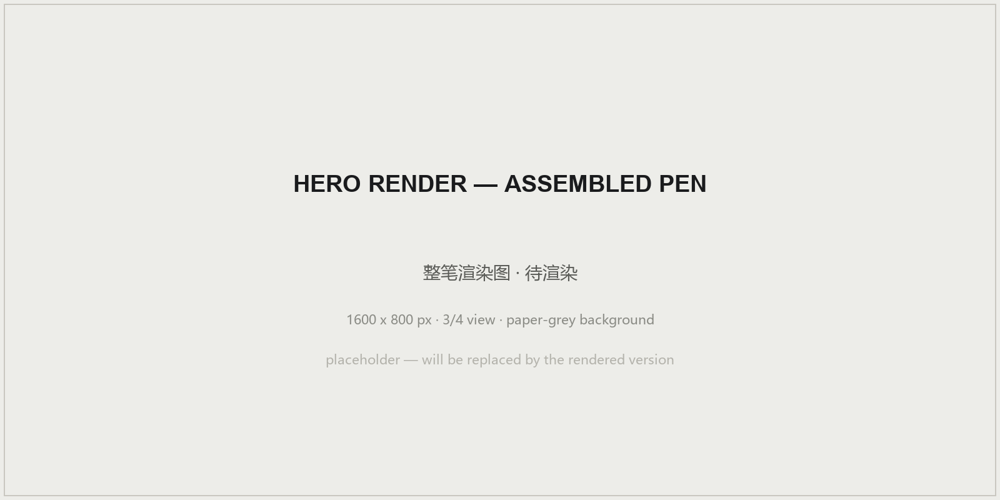
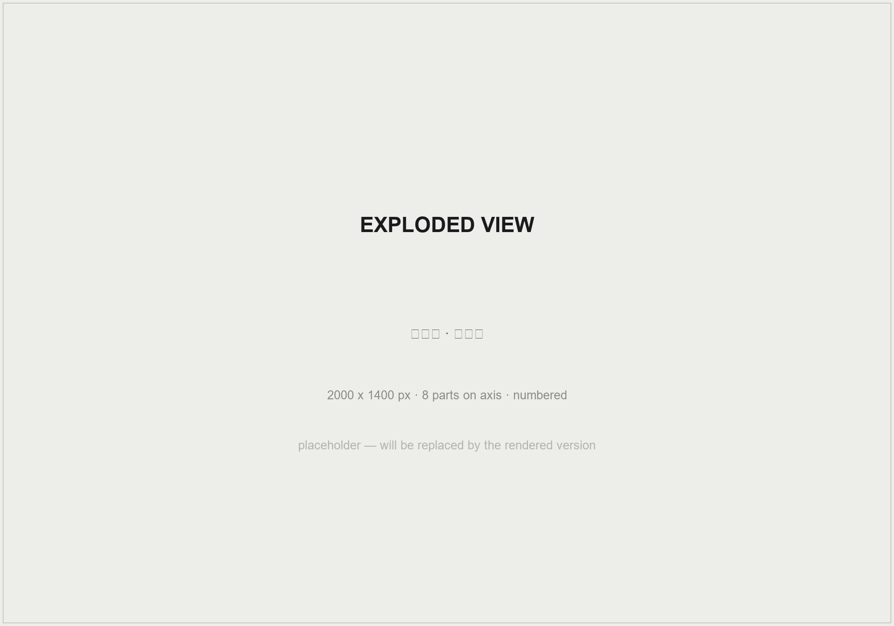
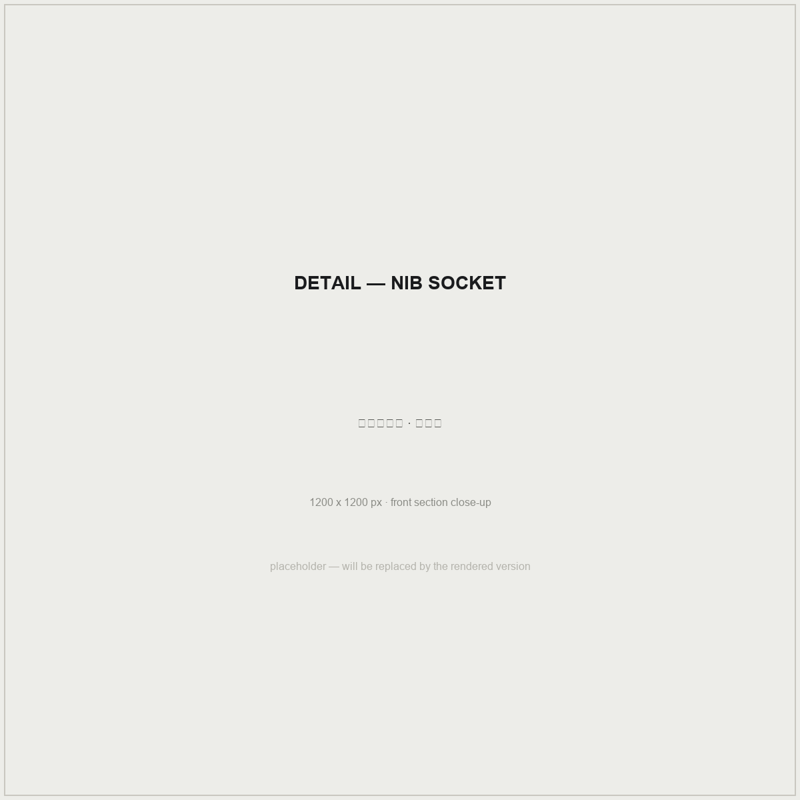
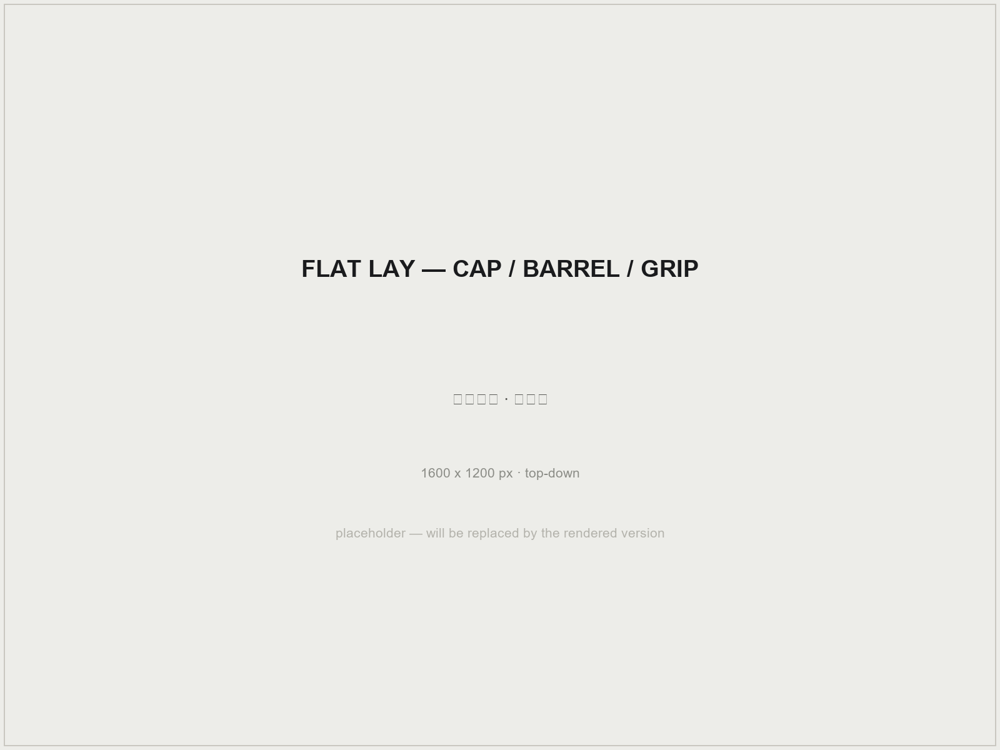
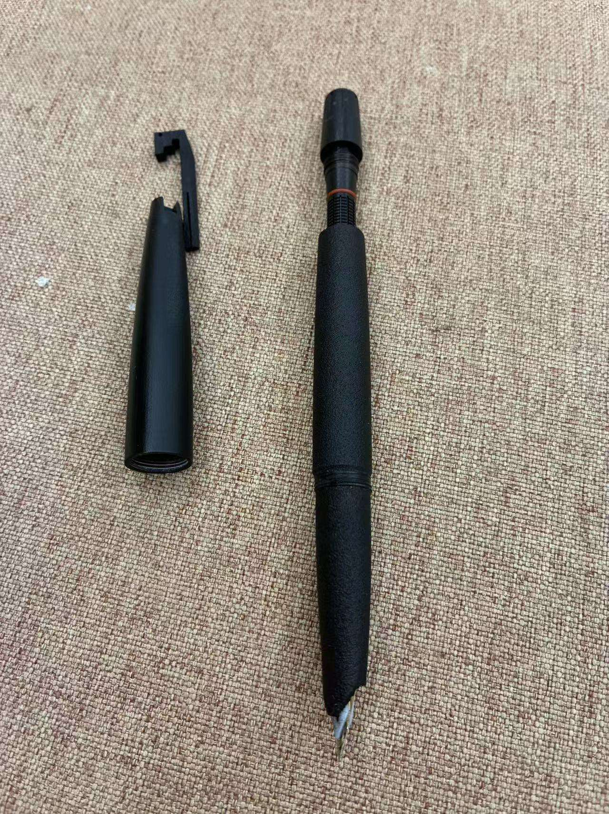
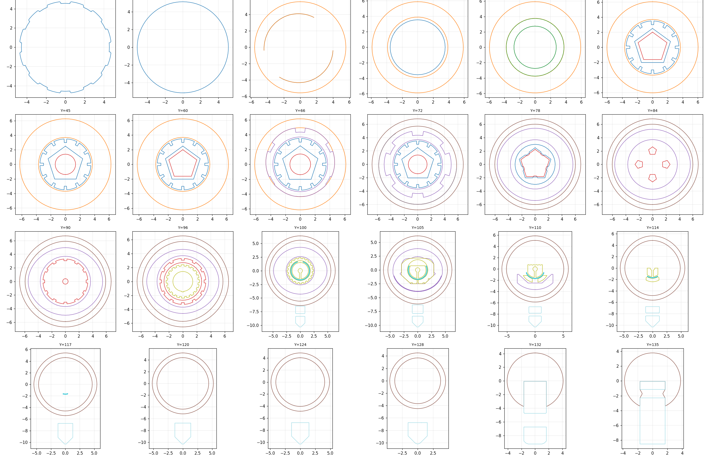
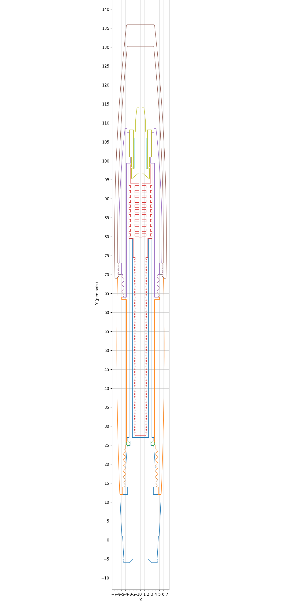
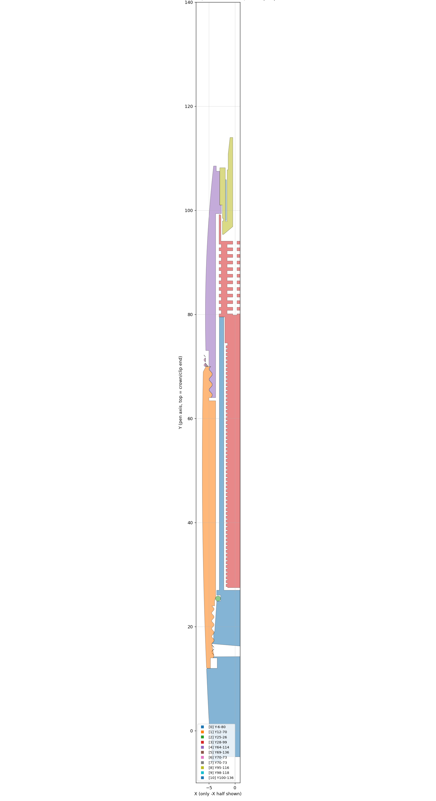

Portfolio · work in public 作品集 · 开源进行中
Design for the
physical world.
为实体世界而设计。工业设计与工程——当前项目：一支可以打印出来的钢笔。
Projects 项目

White Feather Fountain Pen
白翎钢笔 · wf672
A modular fountain-pen body for the standard 18.5 mm hooded nib unit — printed as one file, kept for years. The writing end is a part you can buy; everything else you can print, modify and rebuild.
适配市售 18.5mm 暗尖笔芯的模块化笔身——一个文件打印，一支长期使用的笔。 书写端是买得到的标准件，其余全部可以打印、修改、重造。
142 mmOverall length 总长
Ø13.7 mmMax diameter 最大外径
18.5 mmHooded nib unit 暗尖笔芯
5 solidsin one STL 单文件五实体




Engineering drawings 工程剖切图
cut from the released STL 剖切自开源 STL



View repository 查看仓库 →
2 stars · chart in repo README · updated weekly 每周更新
Contact me 联系我
- Emailrattry4codex@163.com
- GitHub@Xarfa